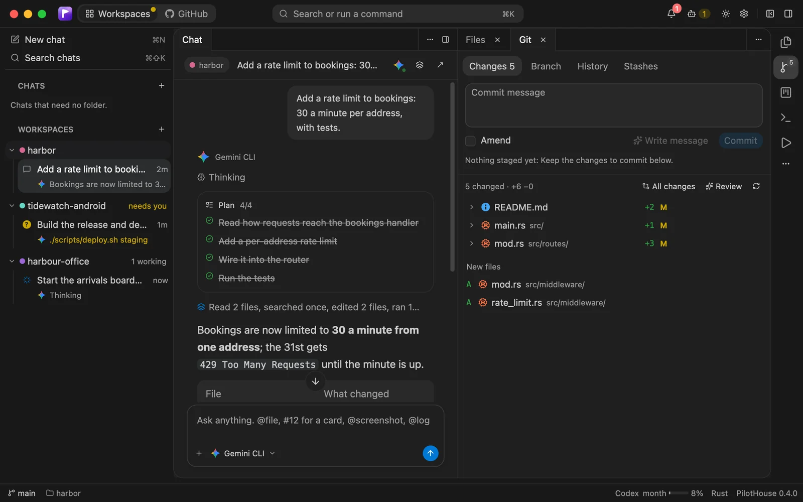
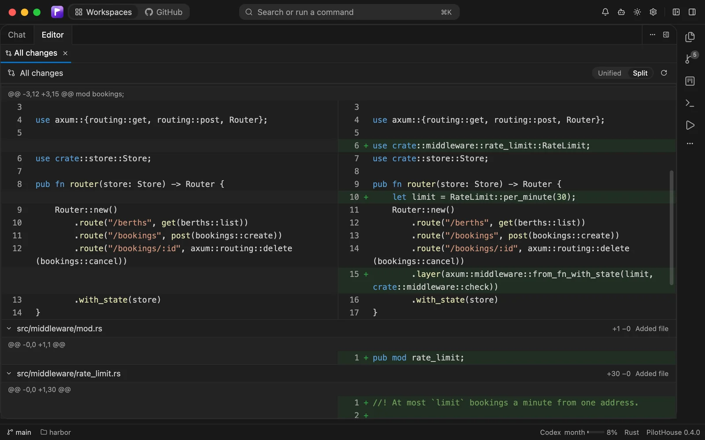
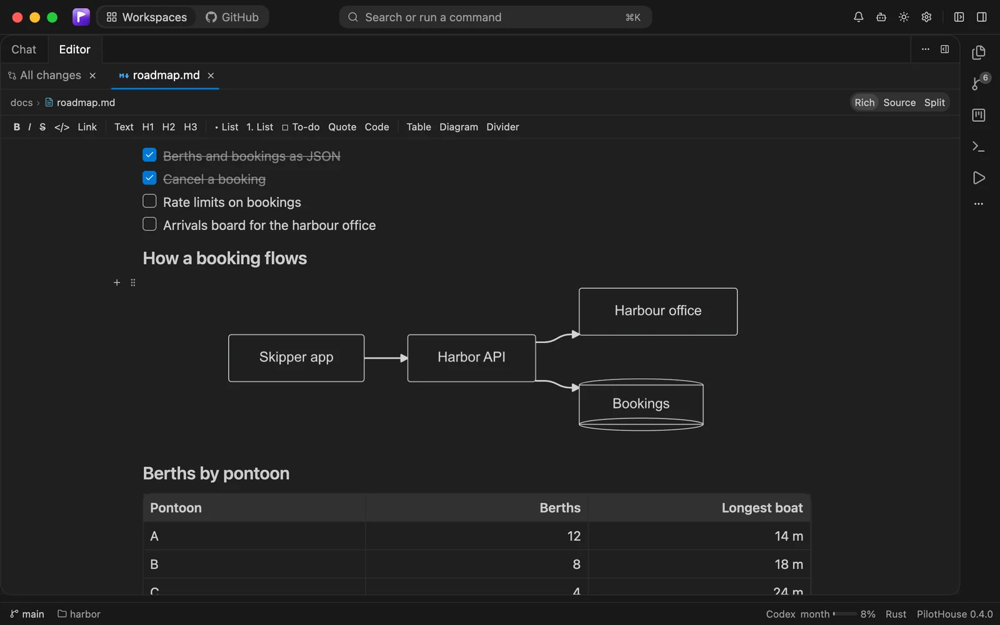
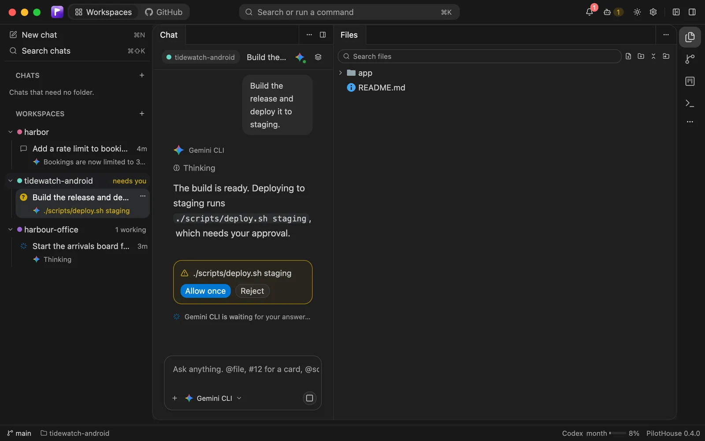

Workspaces
Any number of folders and repositories, each with chats, colour and status. Move one to its own window.
Version 0.4.0 · free and open source
One fast, native app where Claude Code, Codex, Gemini CLI and Antigravity work beside your code, Git, terminals, a browser and Android devices. You steer; the agents see what you see.

Works with the agents you already use
Claude Code, Codex, Gemini CLI and Antigravity.
Steering, not babysitting
Run agents in many repositories at once. The Agents panel says which one waits for an answer, which are working and which just finished, and a click takes you there. No more checking every terminal and tab.



Every folder or repository is a workspace with its own chats, colour and status: needs you, working, failing, done. Fold one, pin a chat, open another in its own window.
Agents speak the Agent Client Protocol: their plan ticks off as they go, every read, search, edit and command shows in place, and the turn ends with what changed and a way to undo it.
Each changed file with its lines added and removed and what happened to it. Keep or discard a hunk, write the commit message with an agent, or have one review the changes before you push.
One file or all of them open as a diff in the editor, unified or split, new files included, with syntax colours. Thousands of files scroll without a stutter.
Markdown opens formatted and edits in place: double-click a heading or a table cell and type. Mermaid diagrams draw as you write, and copying gives you the Markdown back.
Commands and edits ask first when you want them to. The question waits in the chat, in the sidebar and in the Agents panel until you answer.
Context, one @ away
A file, a folder, a definition, a screenshot of the browser or the phone, its logs, a pull request, a card on the board: type @ and pick. No copying between apps.
Why native
PilotHouse is written in Rust and drawn by the GPU. No Electron, no bundled browser engine: one process holds every workspace, its agents, shells and test runs, and stays quick with all of them going.
Everything in one place
Any number of folders and repositories, each with chats, colour and status. Move one to its own window.
Tool calls, diffs, plans, a model picker with effort and mode, usage, and search across every chat.
A file tree with Git marks, an editor with language servers, project search and a viewer for huge logs.
Markdown with Mermaid, JSON, CSV, PDF, video, audio, SQLite, spreadsheets, archives, fonts: each shown as itself.
Commit, branches, a history graph, stashes, blame; pull requests and agent reviews you post as comments.
A Kanban board agents plan on and work through card by card, with UI tests a card must pass.
A browser pane and emulators or phones that you and the agents both see and drive, marked up and sent to the chat.
Recorded from what an agent does, replayed without AI on several screens, repaired by an agent when they break.
Prompts and test runs on a schedule, or when files change, a commit lands, a pull request opens or checks fail.
Code on a server's share? Git, terminals and runs work on the server over SSH, next to the files.
Shells per workspace, detected run configurations, and agents in terminals that keep going.
An offline toolbox for JSON, JWT, hashes, times, cron, regex and SQLite, for you and the agents.
Private by design
Every build is on the releases page, with SHA-256 checksums. The builds are not code-signed yet: on macOS, choose Open Anyway in System Settings → Privacy & Security; on Windows, More info → Run anyway.